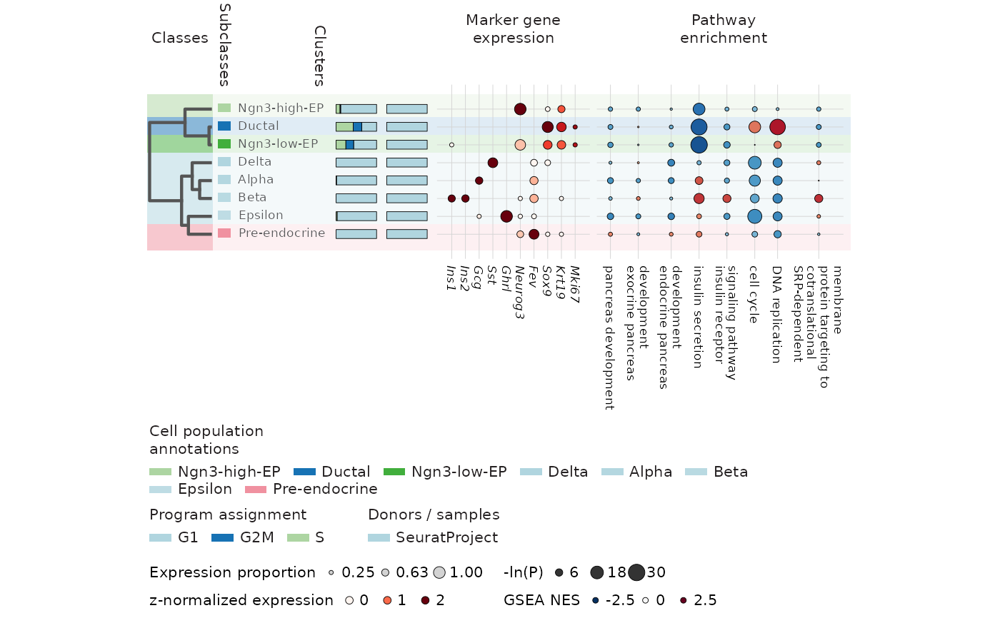

Combine a cluster similarity tree, annotations, cell compositions, marker expression and precomputed GSEA in one aligned plot.
Usage
CellStatePlot(
object,
group.by,
sample.by,
features,
program.by = NULL,
program.scores = NULL,
programs = NULL,
gsea = NULL,
pathways = NULL,
db = NULL,
test.use = "wilcox",
class.by = NULL,
subclass.by = NULL,
class.map = NULL,
subclass.map = NULL,
assay = NULL,
layer = NULL,
input.scale = c("log1p", "counts"),
reduction = NULL,
tree = NULL,
min.pct = 0.25,
expression.cutoff = 0,
min.program.genes = 3,
feature.labels = NULL,
pathway.labels = NULL,
palette = "Chinese",
expression_palette = "Reds",
enrichment_palette = "RdBu",
palcolor = NULL,
family = "sans",
title = NULL,
panel_label = NULL,
return_data = FALSE,
flip = FALSE
)Arguments
- object
A Seurat or Python AnnData object.
- group.by, sample.by
Metadata columns identifying clusters and samples. Both must be complete. Bars show within-cluster cell fractions.
- features
Marker genes in display order. Color shows population-SD z scores of cluster means, clipped to 0–2; size shows expressing fraction. Constant genes have z = 0; unmatched genes remain missing.
- program.by
Metadata column containing per-cell program assignments.
- program.scores
Numeric metadata columns containing program scores. Optional names label programs. The highest score wins; ties are Ambiguous and cells without finite scores are Unassigned.
- programs
Named gene sets. Each gene is standardized across cells using population SD; the highest set mean determines assignment. At least two sets must meet min.program.genes. Supply exactly one of program.by, program.scores and programs.
- gsea
A RunGSEA result or table with Groups, ID, NES and pvalue columns. Tidy names cluster, feature, nes and p_value are also accepted. NULL uses stored results for group.by and test.use. Color shows NES clipped to -2.5–2.5; dot area shows -ln(raw P). Missing or NOT_EVALUABLE entries use gray crosses.
- pathways
Pathway IDs or unambiguous descriptions in display order. NULL shows all supplied pathways without significance filtering.
- db
Value to select from the GSEA table's Database column.
- test.use
Test used to locate stored RunGSEA results.
- class.by, subclass.by
Metadata columns with one annotation per cluster. Mixed annotations require an explicit map.
- class.map, subclass.map
Named cluster-to-annotation vectors, overriding the corresponding metadata columns.
- assay
Seurat assay. NULL uses DefaultAssay(object).
- layer
Expression layer, defaulting to data for Seurat or X for AnnData. Select one joined Seurat layer.
- input.scale
Nonnegative log1p expression or counts. Counts are normalized to 10,000 per cell and transformed with log1p.
- reduction
Seurat reduction or AnnData obsm key used for the tree. NULL uses up to 500 variable cluster-average gene profiles.
- tree
Optional hclust with cluster-ID labels. Otherwise use Pearson distance and complete linkage on cluster-average profiles.
- min.pct
Minimum expressing fraction (0–1) for displaying marker dots.
- expression.cutoff
Nonnegative expression threshold used to count expressing cells, after any counts normalization.
- min.program.genes
Minimum matched variable genes per program.
- feature.labels, pathway.labels
Named ID-to-label vectors. Pathway labels support newlines.
- palette
Categorical palette passed to thisplot::palette_colors().
- expression_palette, enrichment_palette
Continuous palettes for expression and NES. RdBu maps negative NES to blue and positive NES to red.
- palcolor
List of named class, subclass, program and sample colors, or expression and enrichment color ramps.
- family
Font family.
- title, panel_label
Optional title and panel letter.
- return_data
Include numerical summaries and metadata with the plot.
- flip
Arrange clusters in rows with the tree on the left and upright legends.
Examples
data(pancreas_sub)
counts <- GetAssayData5(pancreas_sub, assay = "RNA", layer = "counts")
normalized <- counts %*% Matrix::Diagonal(x = 1e4 / Matrix::colSums(counts))
dimnames(normalized) <- dimnames(counts)
groups <- sort(unique(as.character(pancreas_sub$SubCellType)))
scores <- vapply(groups, function(group) {
cells <- colnames(counts)[pancreas_sub$SubCellType == group]
FoldChange(
normalized,
cells.1 = cells, cells.2 = setdiff(colnames(counts), cells),
mean.fxn = function(x) log2(Matrix::rowMeans(x) + 1), fc.name = "log2FC"
)$log2FC
}, numeric(nrow(counts)))
pathways <- c(
"GO:0031016", "GO:0031017", "GO:0031018", "GO:0030073",
"GO:0008286", "GO:0007049", "GO:0006260", "GO:0006614"
)
database <- PrepareDB(
species = "Mus_musculus", db = "GO_BP", db_IDtypes = "symbol",
convert_species = FALSE, verbose = FALSE
)[["Mus_musculus"]][["GO_BP"]]
#>
#>
term2gene <- unique(database$TERM2GENE[
database$TERM2GENE$Term %in% pathways, c("Term", "symbol")
])
term2name <- database$TERM2NAME[
database$TERM2NAME$Term %in% pathways, c("Term", "Name")
]
set.seed(20261109)
gsea <- RunGSEA(
geneID = rep(rownames(counts), length(groups)), geneScore = as.numeric(scores),
geneID_groups = rep(groups, each = nrow(counts)),
species = "Mus_musculus", IDtype = "symbol", result_IDtype = "symbol",
TERM2GENE = term2gene, TERM2NAME = term2name,
minGSSize = 10, maxGSSize = 5000, nPermSimple = 10000, eps = 0,
convert_species = FALSE, verbose = FALSE
)
#> Registered S3 method overwritten by 'ggtree':
#> method from
#> fortify.igraph ggnetwork
CellStatePlot(
pancreas_sub,
group.by = "SubCellType", sample.by = "orig.ident",
features = c("Ins1", "Ins2", "Gcg", "Sst", "Ghrl", "Neurog3", "Fev", "Sox9", "Krt19", "Mki67"),
program.by = "Phase", class.by = "CellType", gsea = gsea, pathways = pathways,
layer = "counts", input.scale = "counts", flip = TRUE
)
